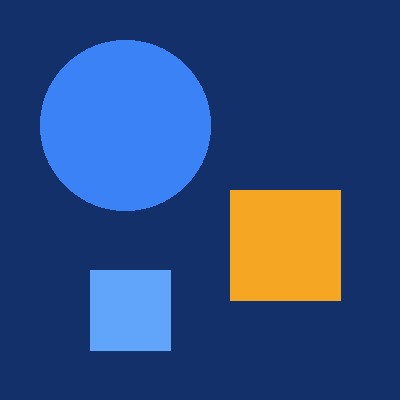

Giới thiệu
Tôi đang học CSS.
Xin chào! Trang này hiện chỉ có HTML. Sau mỗi slide, bạn thêm một đoạn CSS vào css/style.css và trang sẽ thay đổi dần.
Tôi đang học CSS.
Slide 8
CSS (Cascading Style Sheets) là ngôn ngữ định dạng cho tài liệu HTML. HTML quyết định trang có nội dung gì; CSS quyết định nội dung đó trông như thế nào: màu sắc, font chữ, khoảng cách, bố cục.
Tách CSS ra file riêng giúp mã dễ quản lý: một file CSS dùng cho nhiều trang, đổi giao diện không cần sửa HTML.
Quan sát: trang bạn đang xem chưa có dòng CSS nào. Hãy nhớ trạng thái này để so sánh cuối buổi.
Slide 9
style của từng thẻ. Nhanh nhưng khó bảo trì.<style> ở phần <head>. Chỉ dùng cho một trang..css riêng, liên kết bằng thẻ <link>. Đây là cách dùng trong môn học.<!-- Inline -->
<p style="color: red;">Xin chào!</p>
<!-- Internal -->
<style>
h1 { color: green; }
</style>
<!-- External -->
<link rel="stylesheet" href="css/style.css">Dòng này dùng để thử inline CSS.
Slide 10 – 12
Mỗi quy tắc gồm bộ chọn (chọn phần tử nào) và khối khai báo trong ngoặc nhọn. Mỗi khai báo có dạng thuộc tính: giá trị;.
selector {
property: value;
}
.card { padding: 1rem; color: #172033; }Ba loại bộ chọn cơ bản: theo thẻ (p), theo class (.demo ứng với class="demo"), theo id (#intro ứng với id="intro").
Xin chào! – chọn theo thẻ p
Xin chào! – chọn theo class demo
Xin chào! – chọn theo id intro
Slide 13, 15
p: chọn tất cả đoạn văn trong trang..card: chọn mọi phần tử có class card, dùng lại được nhiều lần.#contact: chọn đúng một phần tử có id contact (id là duy nhất).Cascade (xếp tầng): hai quy tắc cùng bộ chọn, cùng thuộc tính thì quy tắc viết sau được áp dụng.
.card { color: blue; }
.card { color: navy; } /* kết quả: navy */Quan sát: thẻ Giới thiệu ở đầu trang (class card) và khối Liên hệ ở cuối trang (id contact).
Slide 14
color đổi màu chữ, background-color đổi màu nền. Bốn cách viết màu:
Tên màu – color: red;
HEX – color: #ffa400; (mỗi cặp ký tự từ 00 đến FF)
RGB – color: rgb(0, 0, 0); (mỗi kênh 0–255)
RGBA – color: rgba(0, 0, 0, 0.5); (alpha 0 trong suốt, 1 đục hoàn toàn)
Slide 16
Slide 17
width/height đặt kích thước; min-* là giới hạn dưới; max-* là giới hạn trên. Phần trăm của width tính theo chiều rộng khối chứa.
Cùng làm: thu hẹp cửa sổ trình duyệt và so sánh hai hộp.
Slide 18
Năm thuộc tính: background-color, background-image, background-repeat, background-position, background-size. Giá trị cover phủ kín, có thể cắt ảnh; contain hiện đủ ảnh, có thể còn khoảng trống.
Đường dẫn trong url() tính từ vị trí file CSS, nên viết url("../images/bg.jpg").
Cùng làm: đổi cover thành contain và quan sát.
Slide 19
px cố định; % theo khối chứa; em theo cỡ chữ liên quan; rem theo cỡ chữ của thẻ html; vw, vh theo 1% chiều rộng, chiều cao khung nhìn.
Cùng làm: đổi width từ 50% thành 75%.
Slide 20
Với font-size: em dựa vào cỡ chữ phần tử cha; rem dựa vào cỡ chữ phần tử gốc html. Với padding: 1em, em dựa vào cỡ chữ của chính phần tử.
2em
2rem
Cùng làm: đổi font-size của .parent thành 24px. Dòng nào thay đổi?
Slide 21
Viết tắt border: độ-dày kiểu màu;, ví dụ border: 2px solid #3157d5;. Kiểu thường dùng: solid (liền), dashed (nét đứt), dotted (chấm). border-radius bo góc.
Quan sát: thẻ Giới thiệu ở đầu trang. Cùng làm: đổi solid thành dashed rồi đổi border-radius.
Slide 22
Viết 1 đến 4 giá trị theo thứ tự trên – phải – dưới – trái:
margin: 16px; /* mọi phía */
margin: 16px 24px; /* trên/dưới | trái/phải */
margin: 16px 24px 32px; /* trên | trái/phải | dưới */
margin: 16px 24px 32px 40px; /* trên | phải | dưới | trái */
margin: 16px auto; /* căn giữa khối có width */Margin dọc của hai khối liền nhau có thể gộp: 20px và 30px thành 30px, không phải 50px.
Slide 23
Cách viết giống margin. Nền được vẽ trong vùng padding; margin nằm ngoài viền và luôn trong suốt.
Cùng làm: đổi padding của thẻ Giới thiệu thành 24px 12px và quan sát.
Slide 24
Cùng width: 200px; padding: 20px; border: 2px solid;:
Cùng làm: nếu padding tăng lên 30px, tính lại hai trường hợp rồi kiểm tra bằng DevTools.
Slide 25
block: bắt đầu dòng mới, chiếm cả dòng.inline: nằm trên dòng chữ; width/height không có tác dụng.inline-block: nằm trên dòng, đặt được width/height.none: không hiển thị, không chiếm chỗ.Slide 26
.intro {
font-family: Arial, sans-serif; /* Arial; nếu thiếu dùng sans-serif */
font-size: 20px;
font-weight: 700; /* 400 thường, 700 đậm */
font-style: italic;
line-height: 1.5; /* 1.5 × 20px = 30px */
}Quan sát: đoạn mở đầu ở đầu trang có class intro.
Slide 27
text-align căn lề, text-decoration gạch chân, text-transform chuyển chữ hoa, letter-spacing giãn chữ. text-transform chỉ đổi cách hiển thị, không sửa nội dung HTML.
học css
Slide 28
max-width: 100%; height: auto; giữ ảnh không vượt khối chứa và giữ tỷ lệ. Với khung kích thước cố định, object-fit: cover lấp kín (có thể cắt), contain hiện đủ ảnh (có thể trống).

object-fit: cover và object-fit: contain
Slide 29
Pseudo-class (một dấu :) chọn phần tử theo trạng thái hoặc vị trí: :hover khi trỏ chuột, :focus khi nhận focus, :nth-child(2) phần tử thứ hai.
Pseudo-element (hai dấu ::) tạo nội dung ảo bằng ::before, ::after; cần thuộc tính content.
Ghi chú
Cùng làm: rê chuột lên nút Gửi, sau đó bấm phím Tab để thấy trạng thái focus.
Slide 30
Hoàn thiện thẻ Giới thiệu ở đầu trang theo yêu cầu:
| Yêu cầu | Thuộc tính CSS |
|---|---|
| Rộng tối đa 360px | max-width: 360px; |
| Khoảng trong 24px | padding: 24px; |
| Viền 2px liền, màu #3157d5 | border: 2px solid #3157d5; |
| Bo góc 12px | border-radius: 12px; |
| Nền #e8f0ff, chữ #172033 | background-color: #e8f0ff; color: #172033; |
| Kích thước gồm padding và viền | box-sizing: border-box; |
Tự kiểm tra: nội dung đủ, khoảng trong đều, viền và góc đúng, hộp không vượt khối chứa.
Slide 31
Bộ chọn .project img chỉ chọn thẻ img nằm bên trong phần tử có class project.
Trang giới thiệu cá nhân.
Cùng làm: đổi ảnh thành images/project-wide.jpg, kiểm tra lại và ghi một lỗi đã sửa.
Slide 33
Mỗi phần tử là một hộp gồm 4 lớp, từ trong ra ngoài: content → padding → border → margin. Padding là khoảng trong, margin là khoảng ngoài.
Chú thích: vùng vàng là margin, viền xanh đậm là border, vùng xanh nhạt là padding, vùng trắng là content.
Slide 34
*, *::before, *::after {
box-sizing: border-box;
}Sau quy tắc này, width khai báo đã bao gồm padding và border. Margin vẫn nằm ngoài width.
Slide 35
Slide 36
Khoảng cách dòng hợp lý (khoảng 1.5) giúp đoạn văn dễ đọc, nhất là khi phóng to trang.
Dòng quá chặt: Chúng ta đang sống trong một thế giới đầy cơ hội. Công nghệ mang đến nhiều cách học hỏi và kết nối. Chỉ cần kiên trì, bất kỳ ai cũng có thể tạo ra những thay đổi tích cực cho bản thân và cộng đồng.
Dòng dễ đọc: Chúng ta đang sống trong một thế giới đầy cơ hội. Công nghệ mang đến nhiều cách học hỏi và kết nối. Chỉ cần kiên trì, bất kỳ ai cũng có thể tạo ra những thay đổi tích cực cho bản thân và cộng đồng.
Slide 37
Khai báo các màu này một lần thành biến (design token) và dùng lại bằng var():
:root {
--text: #172033;
--primary: #1f3c88;
}
body { color: var(--text); }Slide 38
Chữ, liên kết và trạng thái focus cần đủ tương phản với nền để dễ đọc.
Chữ tương phản thấp: màu nhạt trên nền sáng, khó đọc. Đây là một liên kết
Chữ tương phản rõ: màu đậm trên nền sáng, dễ đọc. Đây là một liên kết
Slide 39 – 40
Đơn vị tương đối co giãn theo phần tử khác hoặc khung nhìn, phù hợp nhiều loại màn hình.
| Đơn vị | Ý nghĩa |
|---|---|
| % | Tương đối so với phần tử cha |
| em | Theo font-size của phần tử cha |
| rem | Theo font-size của phần tử gốc html |
| vw | 1vw = 1/100 chiều rộng khung nhìn |
| vh | 1vh = 1/100 chiều cao khung nhìn |
| vmin / vmax | Giá trị nhỏ hơn / lớn hơn giữa vw và vh |
Đơn vị tuyệt đối có giá trị cố định, dễ gặp vấn đề khi hiển thị trên nhiều màn hình khác nhau.
| Đơn vị | Ý nghĩa |
|---|---|
| px | 1px = 1/96 inch |
| pt | 1pt = 1/72 inch |
| pc | 1pc = 12pt |
| cm, mm | Centimet, milimet |
| in | 1in = 96px = 2.54cm |
Slide 42
Slide 46
gap: khoảng cách giữa các item.justify-content: phân bố item trên trục chính (flex-start, center, space-between).align-items: căn item trên trục phụ (flex-start, center, flex-end).Cùng làm: thay đổi lần lượt từng thuộc tính của .flex-demo và quan sát.
Slide 47 – 49
grid-template-columns: repeat(2, 1fr) tạo hai cột bằng nhau. repeat(auto-fit, minmax(16rem, 1fr)) để trình duyệt tự đổi số cột theo chỗ trống mà không cần media query.
Các card cùng vai trò dùng chung một class (ví dụ project-card) để trình bày nhất quán.
Quan sát: mục Ghi nhớ nhanh ở cuối trang.
Slide 50
Flexbox cho menu, Grid cho danh sách card, footer ở cuối trang. Màu, chữ và khoảng cách dùng chung một bộ token để toàn trang thống nhất.
selector { property: value; }. Thẻ, .class, #id. Quy tắc viết sau thắng khi cùng bộ chọn.
Xem lạicontent → padding → border → margin. Dùng box-sizing: border-box cho toàn trang.
Xem lạirem cho cỡ chữ và khoảng cách, % cho bề rộng, px cho viền và chi tiết nhỏ.
Xem lạiBốn vai trò: background, text, primary, accent. Khai báo bằng biến trong :root.
Xem lạiMột trục. display: flex, gap, flex-wrap, justify-content, align-items.
Xem lạiHai chiều. grid-template-columns, repeat(), fr, auto-fit, minmax().
Xem lạiSlide 52 – 58
Gửi câu hỏi về bài học cho giảng viên qua nhóm lớp hoặc LMS.